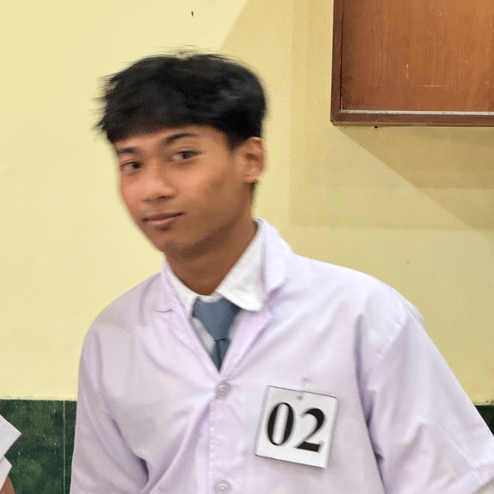
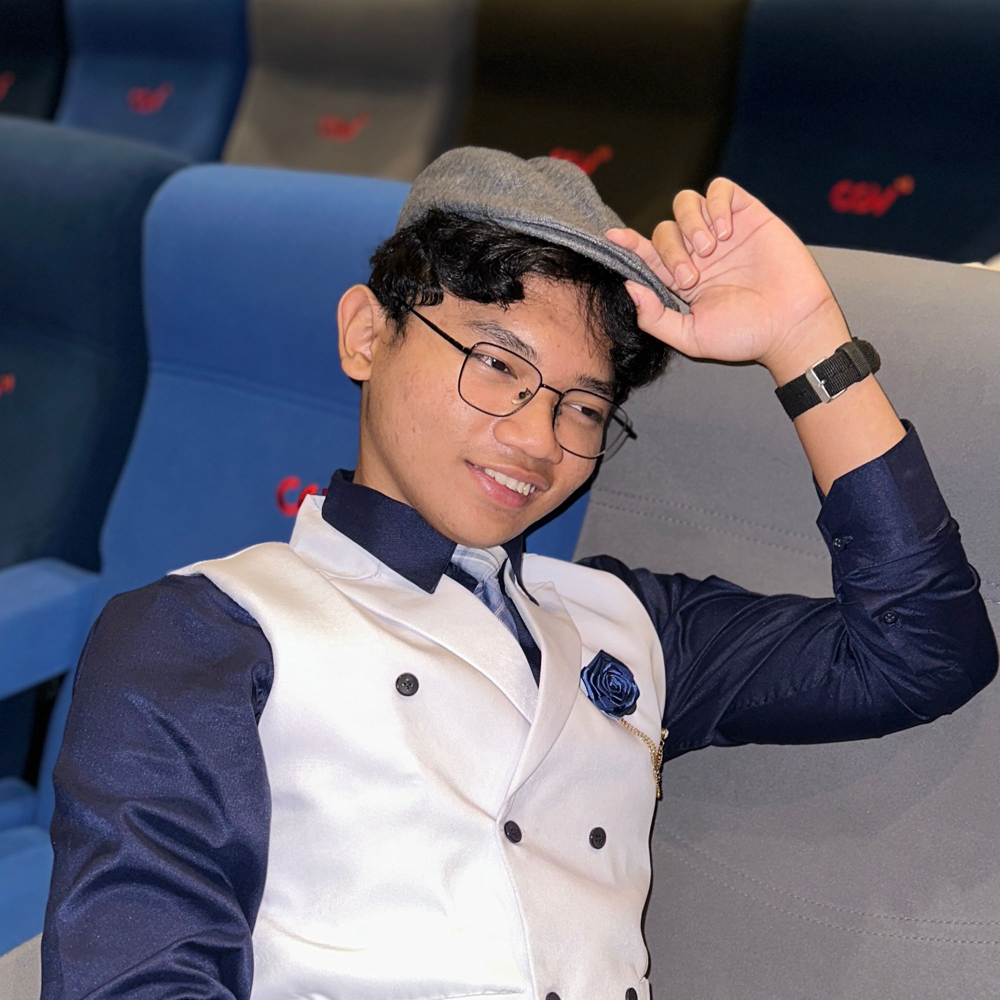
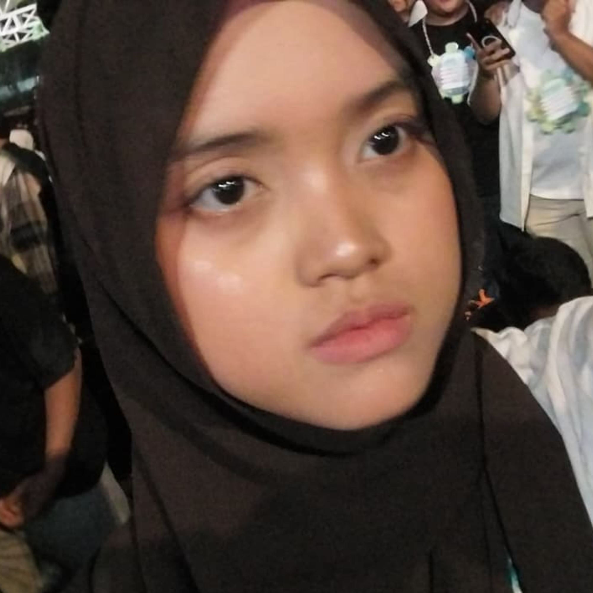

DESIGN THINKING
Manage Time,
Save Energy
Platform manajemen waktu yang membantu mahasiswa mengatur jadwal, menentukan prioritas, dan mengelola beban kegiatan melalui sistem koin energi.
About Us
Problem Domain
Menyeimbangkan berbagai komitmen mahasiswa
Students must balance multiple academic and extracurricular commitments simultaneously. As these demands grow, effective time management becomes essential to maintaining both productivity and well-being.
Point Of View
Manajemen waktu yang fleksibel dan terintegrasi
Students need a flexible and integrated way to manage their academic and extracurricular commitments, as fragmented tools, changing workloads, and reliance on external reminders make it difficult to stay organized. A system that unifies schedules, adapts to task priorities, and encourages accountability through social interaction could help them manage their time effectively without feeling overwhelmed.
Teams
Anggota Tim

Faiz Anggarianto A.
5026261157
Bintang Gema F.
5026261116

Abelya Octaviani
5026261102
Ariendya Putri Kirana
5026261011
Laporan
Kumpulan dokumen dan presentasi proyek kami. Pilih kategori untuk menyaring, lalu unduh file yang kamu butuhkan.
Video